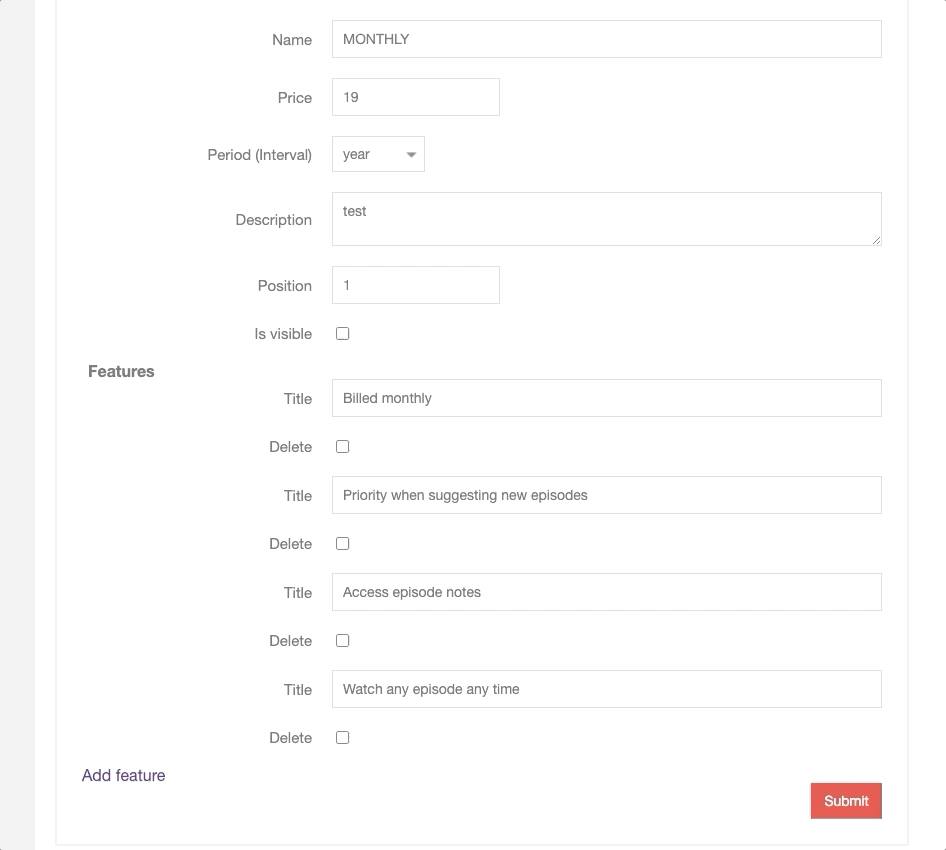

How to build Nested Form ala Rails with Phoenix Liveview
Jan 9, 2021
Every pricing plan needs to list of features. To allow users to type all related data in one form we want to implement something that is called “Nested form” and is well known from other Web Frameworks - Ruby on Rails, thanks to a dedicated gem that handles it out of the box. Some community members considered this as an anti-pattern, however from the user experience perspective it saves a lot of time when adding data to the tables that have one-to-many relationships.
There are a few ways to achieve it with Elixir, after analyzing all of them the most efficient and the most Phonix-way in my opinion is the one that uses LiveView, one of the flag features of Web Framework that is getting more traction.
To achieve my goal with Phoenix it took me a bit of time, so I decided to describe the process of adding this feature to my SaaS app.
Setup of Phoenix LiveView
Surprisingly to me, not every Phoenix app is ready to play with LiveView. You can add a flag during project generation or setup it manually. I used the second approach and the whole process is not complicated. You can find an installation guide here: https://hexdocs.pm/phoenix_live_view/installation.html
After setting up a live view let’s add our features to the schema of a pricing plan:
1 2 3 4 5 6 7 8 9 10 11
defmoduleKickstart.Accounts.PricingPlando schema "pricing_plans"do field :description, :string field :name, :string field :position, :integer field :is_visible, :boolean
+ embeds_many :features, Feature, on_replace::delete# add this line timestamps() end end
Modify pricing plan changeset in the same file, by adding cast_embed function that does the job:
defmoduleKickstart.Accounts.Featuredo use Ecto.Schema import Ecto.Changeset
embedded_schema do field :title field :temp_id, :string, virtual:true field :delete, :boolean, virtual:true end
defchangeset(feature, attrs) do feature |> Map.put(:temp_id, (feature.temp_id || attrs["temp_id"])) # So its persisted |> cast(attrs, [:title, :delete]) # Add delete here |> validate_required([:title]) |> maybe_mark_for_deletion() end
defpmaybe_mark_for_deletion(%{data: %{id:nil}} = changeset), do: changeset defpmaybe_mark_for_deletion(changeset) do if get_change(changeset, :delete) do %{changeset | action::delete} else changeset end end end
We also need to add a small module that will be used later in our live form:
1 2 3 4 5 6 7
defmoduleKickstart.PricingPlansdo alias Kickstart.Accounts.Feature
defchange_feature(%Feature{} = feature) do Feature.changeset(feature, %{}) end end
I got stuck for a while when working on this feature because my initial implementation used mount/2 instead of mount/3. Apart from this implementing this with the live view was quite enjoyable and I’m very happy with the final result. Here you can see how it works: 